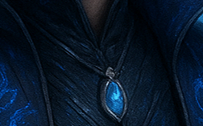
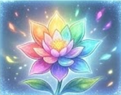

No.of items Xiao Lin collected

Seiryū Destroyer is far more than a weapon to Xiao Lin—it is the living legacy of his ancestor, the Azure Dragon Sovereign.
When Xiao Lin first discovered the broken blade during the Great Sovereign War, it recognized his bloodline and awakened. The sword tested his will, accepted him as its master, and became his closest companion in battle. As Xiao Lin grew stronger, Seiryū Destroyer absorbed energy from defeated enemies, repaired itself, and gradually revealed the memories and teachings of his ancestor.
Their bond evolved from master and weapon into one soul and one will. The sword guided Xiao Lin through his greatest trials, helped awaken his Azure Dragon inheritance, and ultimately became a part of his very being. By the end of the story, Xiao Lin and Seiryū Destroyer fought as a single entity, symbolizing the union of his past, present, and destiny.
To Xiao Lin, Seiryū Destroyer is not merely a sword—it is his ancestor's trust, his clan's legacy, and the companion that carried him from mortal cultivator to Supreme God.

The Jade Pendant is the most important treasure in Xiao Lin's early journey. It was left behind by his father, Xiao Tian, before his disappearance.
At first, it seemed like a simple keepsake, but it later revealed itself to be a sacred artifact connected to Xiao Lin's Azure Dragon bloodline and the legacy of the Azure Dragon Sovereign. The pendant awakened his dormant cultivation talent, guided him to hidden inheritances, protected him during life-threatening situations, and served as a bridge between him and his ancestor's will.
Throughout his journey, the pendant acted as:
->A reminder of his father.
->The key to awakening his bloodline.
->A guide toward his destiny.
->A vessel carrying traces of his ancestor's power.
In the final stages of the story, the pendant fulfilled its ultimate purpose by helping transfer his ancestor's complete inheritance to Xiao Lin, playing a crucial role in his rebirth and ascension to Supreme Godhood.
To Xiao Lin, the jade pendant is more than an artifact—it is the symbol of his father's love, his ancestor's faith, and the first spark that began his path from a mocked disciple to the Azure Dragon God.

Seven Color Immortal Flower
The Seven Color Immortal Flower is a legendary heavenly treasure said to bloom only once every ten thousand years. Each of its seven petals contains a different aspect of heavenly power, representing the seven paths of cultivation: life, death, spirit, body, soul, fate, and divinity.
For Xiao Lin, the flower could serve as a supreme divine treasure capable of:
*Healing fatal wounds and damaged meridians.
*Strengthening the soul and divine sense.
*Purifying bloodlines.
*Assisting breakthroughs into higher realms.
*Awakening hidden potential within the Azure Dragon lineage.
Because of its immense value, countless clans, sects, and gods would be willing to wage war for it.
The Seven Color Immortal Flower is a symbol of rebirth and destiny—a treasure that can change the fate of an entire era with a single bloom.
If this flower already has a specific role in your story, tell me its details and I can create an official lore summary that matches Echoes of Azure Cloud.